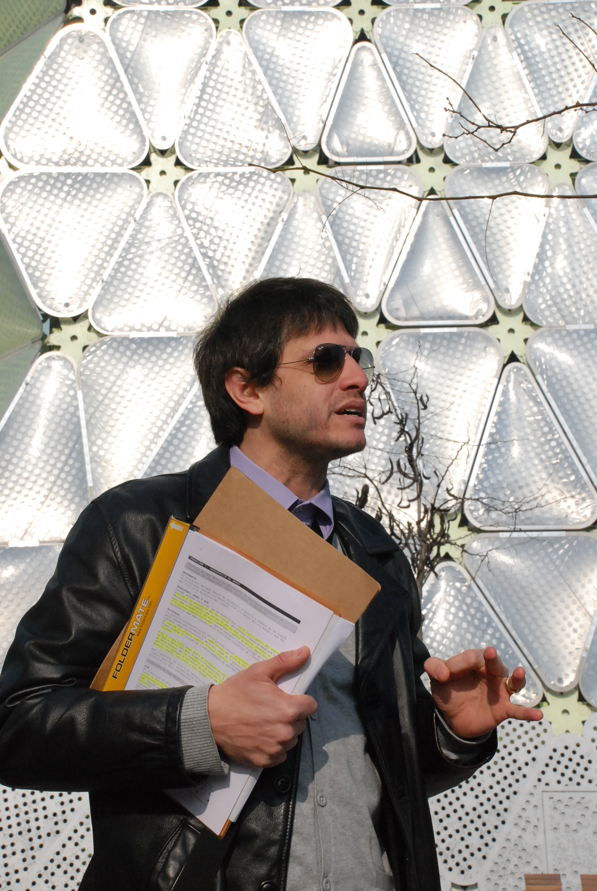
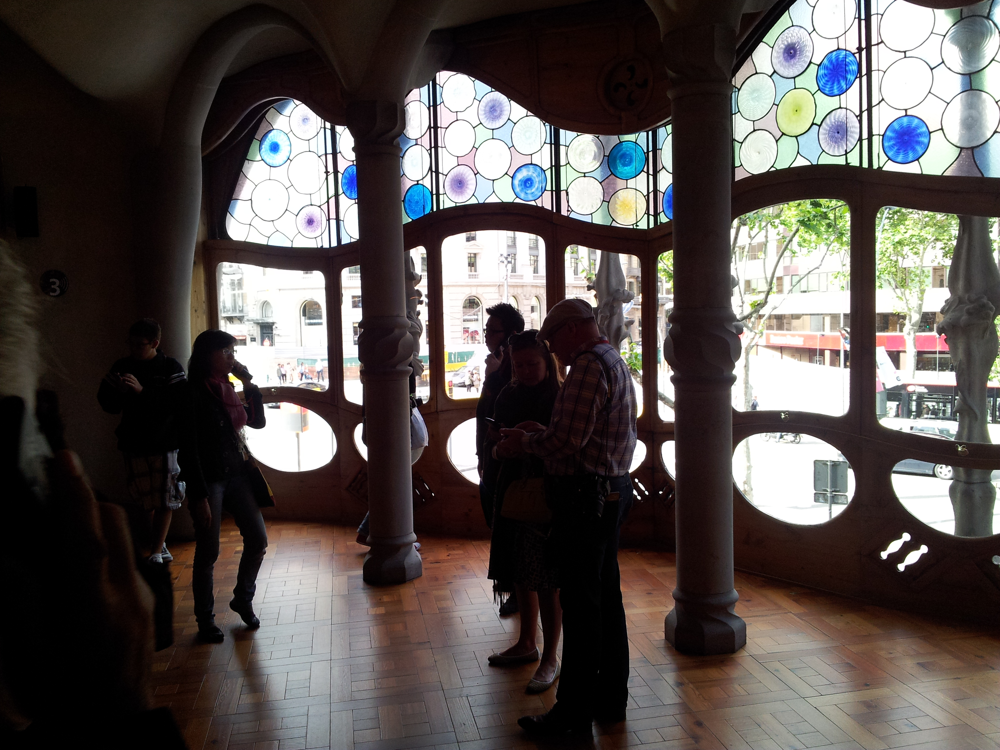

architour
architour és un despatx d'arquitectes que realitza diverses activitats en relació amb l'arquitectura i la ciutat. Fonamentalment, organitza rutes guiades d'arquitectura en la ciutat de Barcelona i de Vic. Ofereix diverses rutes específiques i monogràfiques on l'arquitectura, com a edificis seleccionats, convergeix amb el fenomen de la ciutat, privilegiant-ne la dimensió pública, i la formació, història i patrimoni de la ciutat. L’interès pel viatge en la ciutat té a veure amb una preocupació social per tal d’explicar la importància de l’arquitectura com a màxima producció cultural, ja que ultrapassa el projecte d’edificis. En aquest sentit, architour estén la concepció de la ruta d’arquitectura a la de projecte cultural, per tal de oferir viatges d’arquitectura així com programes educatius.
Com
Architour aspira a la immersió en la ciutat per induir la reflexió, la crítica i la interacció dels participants, cosa que no es contradiu amb el delit i la novetat, on el viatge es converteix en una experiència enriquidora. Els recorreguts es porten a terme amb grups reduïts, guiats sempre per arquitectes.
Així mateix s’entreguen dossiers personals amb plànol, ressenya de la ruta amb descripció i fotos de tots els edificis i llocs a visitar, a més d’una bibliografia, en format d’un arxiu PDF. Les rutes, dins del possible, solen acabar en un punt alt panoràmic, com una terrassa o campanar, utilitzat per compartir conclusions, en contrastar l’experiència a peu amb la vista d’ocell. Tot això, en relació amb les rutes. Les altres activitats com els viatges d’arquitectura o els projectes educatius, conceptualment, s’adapten al mateix abordatge. Els viatges ofereixen un seguit ampli de rutes i els programes desenvolupen unes temàtiques concretes però sempre en el marc urbà, explorant-ho en els seus vius carrers.
Qui

El projecte neix l’any 2009, creat per Ariel Cavilli. “Soc un viatger”, li agrada dir a l’Ariel. Atesa aquesta disposició i la inclinació per la recerca, surt la idea d’oferir unes rutes d’arquitectura des de la visió d’un arquitecte, per explicar des de l’arquitectura, la ciutat, la història i la cultura. Aquí, a qui està adreçat el projecte. A arquitectes, sí, però molt més encara, a “viatgers”, tot tenint clar que hi ha una diferència no petita entre el viatge i el turisme. Aquestes són les coordenades del “qui” i el “per a qui”.
Ariel Cavilli
Nascut i criat a Buenos Aires, Argentina –també amb nacionalitat italiana perquè els seus avis van emigrar a l’Argentina-, es va graduar com arquitecte a la Universidad de Buenos Aires (UBA) el 1994. Va realitzar un postgrau en Arquitectura Mediambiental a la UBA, va ser professor universitari d’aquesta matèria, i va impartir cursos en història de l’arquitectura. Va continuar aquests camps d’interès fins que va arribar a Barcelona el 2001 per dur a terme un doctorat en Teoria i Història de l'Arquitectura de la Universitat Politècnica de Catalunya (UPC). Va homologar el títol a l'Escola Tècnica Superior d'Arquitectura de Barcelona (ETSAB) de la Universitat Politècnica de Catalunya el 2004 i es va col·legiar al Col·legi d’Arquitectes de Catalunya el mateix any. Seduït pel doctorat i per la riquesa de Barcelona, va ser imantat pel fenomen de la ciutat.
Va fundar Architour el 2009, com a continuació del procés de recerca del doctorat en el qual la recerca es revela clau, unit a una nova experiència antropològica i enriquidora del viatge. Des del 2022, compagina aquesta activitat amb la d’arquitecte al Departament de Cultura de la Generalitat, en el camp del patrimoni arquitectònic. S’encarrega del procés de recerca i investigació necessari per idear totes les rutes d’arquitectura i activitats d’architour. L’Ariel és també guia d’aquestes rutes i activitats. Té nivell C2 en català i estudis de Proficiency in English, per la banda de l’anglès.
Rutes
Què hi ha entremig dels edificis? La ciutat, la història i la cultura.
Els edificis són parts d’unes relacions de forces transversals, on la història, la tecnologia, l’economia, la cultura, la política i la ciutat mateixa s’entrecreuen amb l’arquitectura. L'enfocament apunta a desvetllar quines han estat les circumstàncies i els accidents que han fet possible un determinat edifici i unes determinades relacions històriques en el marc de la ciutat.
Viatges
El viatge és en essència un programa de diverses rutes -i activitats- d’arquitectura. El concepte de ruta no es basa tant en la descripció d’uns edificis aïllats (paradigmàtics), sinó en el que hi ha entremig d’ells: la ciutat, la història i la cultura. Aquesta és la filosofia d’architour: presentar l’arquitectura com a màxima producció cultural, el d’entendre la ciutat com un bé de grandíssim abast, amb Buenos Aires com exemple.
L’enfocament apel·la al pensament crític, cosa que no es contradiu amb el delit i a la novetat, on el viatge esdevé experiència enriquidora. Architour aspira a la immersió en la ciutat per induir la reflexió i la interacció dels participants.
Proper viatge organitzat:
Study Abroad
Architour ofereix viatges d’arquitectura internacionals amb la filosofia d’entendre l’arquitectura com a gran producció cultural. La temàtica consisteix en oferir diverses rutes d’arquitectura fonamentalment per Barcelona –i altres ciutats catalanes- durant un període d’entre una setmana i dues, però cohesionades en el disseny d’un programa individualitzat. El programa “Study Abroad” nord-americà o canadenc -on s’encabeix aquesta activitat- convalida els crèdits en un format de viatge d’estudis. Es pot mencionar l’exemple del programa de viatge dissenyat per a la FIU (Florida International University), adreçat a uns estudiants avançats d’arquitectura amb els seu professor catedràtic. Tot plegat va estar centrat en l’espai públic i en el modernisme català, nus del projecte.
Crea el teu viatge personalitzat
Projectes Educatius
Centrat en l’enfocament de l’arquitectura com a gran motor cultural, architour estén la concepció de les rutes d’arquitectura a un vast projecte cultural per tal de desenvolupar programes educatius i activitats culturals. La idea és apropar l’arquitectura a tots els públics, fomentar la creativitat, el pensament crític i la connexió amb l’espai urbà i natural.